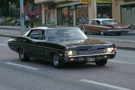

This paragraph element has been selected individually by CSS by using class attribute.
This paragraph element has been affected by 2 different classes
This is a blockquote
This is lighter class
This is normal class
This is bold class
This is bolder class
This is underline This is line-through This is overline
This sentence is going to be italic through CSS
This paragraph is stylized by inline css injecting. Use this type of css when the element will not going to change.
This paragraphs line height is changed with the line-height rule in the css. I am writing the paragraph because it is easier to see the arrangement in a whole lots of awesome words which are forming again an awesome column of ridiculous words. I am just picking my brain to write this paragraph in a very few time so that i wont lose too much time about just writing a ridiculous paragraph just to see the arrangement of line height. That is nasty, that sucks, that stinks but at the same time it is so damn awesome and neat. This stupid paragraph will do the job for me yo. NEAT!
This paragraph is for testing the CSS Box Model. I am writing the paragraph because it is easier to see the arrangement in a whole lots of awesome words which are forming again an awesome column of ridiculous words. I am just picking my brain to write this paragraph in a very few time so that i wont lose too much time about just writing a ridiculous paragraph just to see the arrangement of line height. That is nasty, that sucks, that stinks but at the same time it is so damn awesome and neat. This stupid paragraph will do the job for me yo. NEAT!
This paragraph is for testing the CSS Box Model. I am writing the paragraph because it is easier to see the arrangement in a whole lots of awesome words which are forming again an awesome column of ridiculous words. I am just picking my brain to write this paragraph in a very few time so that i wont lose too much time about just writing a ridiculous paragraph just to see the arrangement of line height. That is nasty, that sucks, that stinks but at the same time it is so damn awesome and neat. This stupid paragraph will do the job for me yo. NEAT!
This paragraph is for testing the CSS Box Model. I am writing the paragraph because it is easier to see the arrangement in a whole lots of awesome words which are forming again an awesome column of ridiculous words. I am just picking my brain to write this paragraph in a very few time so that i wont lose too much time about just writing a ridiculous paragraph just to see the arrangement of line height. That is nasty, that sucks, that stinks but at the same time it is so damn awesome and neat. This stupid paragraph will do the job for me yo. NEAT!
Lets edit this paragraph element with an id attribute through css. This paragraph is for testing the CSS Box Model. I am writing the paragraph because it is easier to see the arrangement in a whole lots of awesome words which are forming again an awesome column of ridiculous words. I am just picking my brain to write this paragraph in a very few time so that i wont lose too much time about just writing a ridiculous paragraph just to see the arrangement of line height. That is nasty, that sucks, that stinks but at the same time it is so damn awesome and neat. This stupid paragraph will do the job for me yo. NEAT!
This text will be alligned at center through css text-align rule.
Lets float this text to the leftAnd lets float this text to the right so that both paragraphs which are block elements will be displayed side by side, right next to each other.
This paragraph will be under an absolute positioned elementThis element will be positioned absolute
Lets fix ths stupid text to the page so that it can annoy everyone visiting.
Lets edit this paragraph element with an id attribute through css. This paragraph is for testing the CSS Box Model. I am writing the paragraph because it is easier to see the arrangement in a whole lots of awesome words which are forming again an awesome column of ridiculous words. I am just picking my brain to write this paragraph in a very few time so that i wont lose too much time about just writing a ridiculous paragraph just to see the arrangement of line height. That is nasty, that sucks, that stinks but at the same time it is so damn awesome and neat. This stupid paragraph will do the job for me yo. NEAT!
Lets edit this paragraph element with an id attribute through css. This paragraph is for testing the CSS Box Model. I am writing the paragraph because it is easier to see the arrangement in a whole lots of awesome words which are forming again an awesome column of ridiculous words. I am just picking my brain to write this paragraph in a very few time so that i wont lose too much time about just writing a ridiculous paragraph just to see the arrangement of line height. That is nasty, that sucks, that stinks but at the same time it is so damn awesome and neat. This stupid paragraph will do the job for me yo. NEAT!
The Chevrolet Impala is a full-size car built by Chevrolet for model years 1958 to 1985, 1994 to 1996, and since 2000 onwards.
Production on the model has been planned to end on June 1, 2019.[4]
The Impala is Chevrolet's popular flagship passenger car and is generally among the better selling automobiles in the United States.[5][6]
For its debut in 1958, the Impala was distinguished from other models by its symmetrical triple taillights. The Caprice was introduced as a top-line Impala Sport Sedan for model year 1965, later becoming a separate series positioned above the Impala in 1966, which, in turn, remained above the Bel Air and the Biscayne. The Impala continued as Chevrolet's most popular full-size model through the mid-1980s. Between 1994–96, the Impala was revised as a 5.7-liter V8–powered version of the Caprice Classic sedan.
In 2000, the Impala was reintroduced again as a mainstream front-wheel drive Hi-Mid sedan.[7] As of February 2014, the 2014 Impala ranked #1 among Affordable Large Cars in U.S. News & World Report's rankings.[8] When the tenth generation of the Impala was introduced for the 2014 model year, the ninth generation was rebadged as the Impala Limited and sold only to fleet customers through 2016. During that time both versions were sold in the United States and Canada. The current-generation Impala is also sold in the Middle East, China, and South Korea.